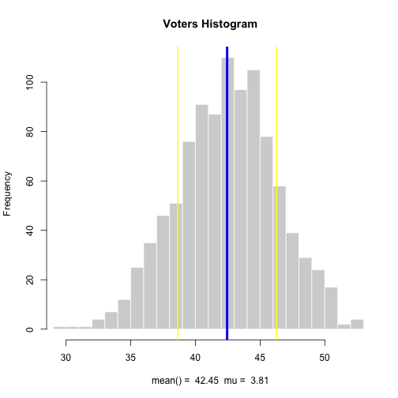

- Republicians face a big challenge in increasing republican vote counts amoung various demographics. a. Women Voters b. Non-White Voters
- Recent history
- Visualize the Challenge
Sonny Rivera
V.P. of Technology

# make the histogram from rnorm
hist(y, breaks = 30, col = 'lightgray', border = 'white',
main = 'Voters Histogram', xlab = str,
xlim = c( min(y), max(y) ) )
## Error in hist(y, breaks = 30, col = "lightgray", border = "white", main = "Voters Histogram", : object 'y' not found